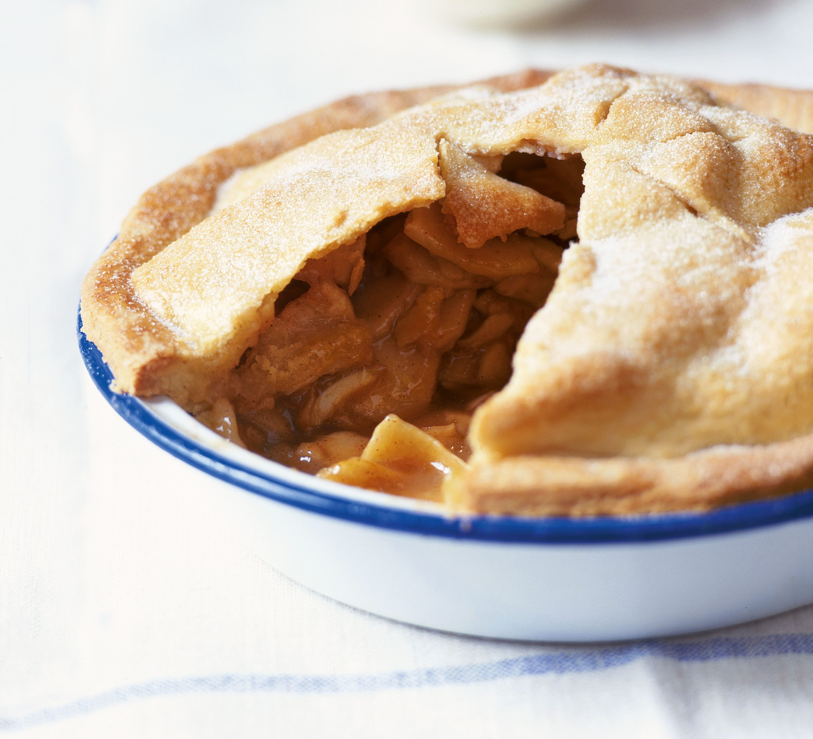
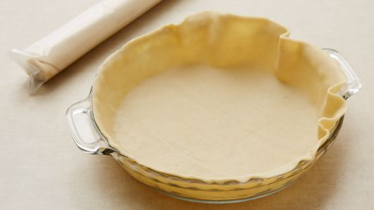
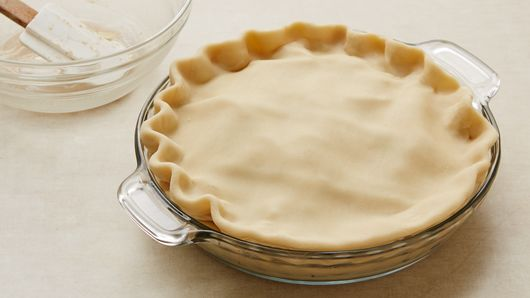
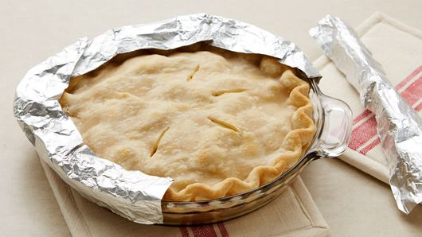

APPLE PIEby FTN |
 |
3.45$
| 6 cuos thinly sliced? peeled apples (6 medium). | 3/4 cup sugar. |
| 2 tablespoons all-purpose flour. | 3/4 teaspoon ground cinnamon. |
| 1/8 teaspoon ground nutmeg. | 1 tablespooon lemon juice. |
1 |
Heat oven to 425°F. Place 1 pie crust in ungreased 9-inch glass pie plate. Press firmly against side and bottom. |
 |
2 |
In large bowl, gently mix filling ingredients; spoon into crust-lined pie plate. Top with second crust. Wrap excess top crust under bottom crust edge, pressing edges together to seal; flute. Cut slits or shapes in several places in top crust. |
 |
3 |
Bake 40 to 45 minutes or until apples are tender and crust is golden brown. Cover edge of crust with 2- to 3-inch wide strips of foil after first 15 to 20 minutes of baking to prevent excessive browning. Cool on cooling rack at least 2 hours before serving. |
 |
4 |
Bake 40 to 45 minutes or until apples are tender and crust is golden brown. Cover edge of crust with 2- to 3-inch wide strips of foil after first 15 to 20 minutes of baking to prevent excessive browning. Cool on cooling rack at least 2 hours before serving. Bake 40 to 45 minutes or until apples are tender and crust is golden brown. Cover edge of crust with 2- to 3-inch wide strips of foil after first 15 to 20 minutes of baking to prevent excessive browning. Cool on cooling rack at least 2 hours before serving. |
|
5 |
Bake 40 to 45 minutes or until apples are tender and crust is golden brown. Cover edge of crust with 2- to 3-inch wide strips of foil after first 15 to 20 minutes of baking to prevent excessive browning. Cool on cooling |